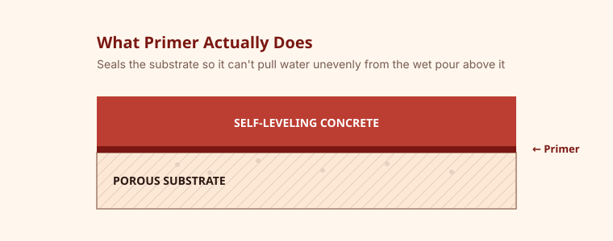

Primer seals a porous or slick substrate, controls how fast it absorbs moisture from the pour, and improves bond strength between the substrate and the self-leveling compound. Most products call for one to two coats and a dry time of 30 minutes to several hours before pouring.

Why Priming Matters
Concrete and many other substrates are porous, which means they can pull water out of a wet self-leveling mix unevenly, weakening the cured surface and increasing the risk of pinholes, poor bond, or premature setting in spots. Primer seals the pores and creates a consistent surface for the compound to bond to.

Primer by Substrate Type
| Substrate | Typical primer need |
|---|---|
| Bare, porous concrete | Usually required — one coat, sometimes diluted per instructions |
| Dense or previously sealed concrete | Often required, sometimes with a bonding-specific primer |
| Ceramic or ported tile | Usually required — helps the compound key into a smooth surface |
| Plywood | Product-specific — check for a wood-rated primer and any mesh requirement |
Applying Primer Correctly
Apply primer evenly with a roller or brush, avoiding puddling. Some products are diluted with water for the first coat on very porous concrete and applied full-strength for a second coat. Always follow the specific dilution and coat count printed on the label rather than a general rule of thumb.
Dry Times Before Pouring
Dry time depends on the product, temperature, and humidity, but ranges from about 30 minutes for fast-dry primers to several hours for others. The surface should typically look and feel dry — not tacky — before the self-leveling compound is poured, unless the manufacturer specifically calls for pouring into a tacky primer.
What Happens If You Skip It
Pouring without primer on a substrate that requires it can cause pinholing, weak bond, and in some cases premature or uneven set as the substrate pulls water from the mix unevenly. It's one of the more common causes of adhesion failure reported after a pour.
Frequently Asked Questions
Can I use any primer with any self-leveling compound?
No — manufacturers generally recommend or require a primer from the same product line, since formulations are matched for compatibility and bond strength.
How do I know if my primer is fully dry?
Check the manufacturer's stated dry time and visual/tactile guidance on the label; a tacky or wet-looking surface usually means it isn't ready.
Related Guides
Sources & References
- Manufacturer primer instructions and technical data sheets